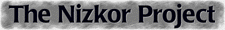

Neonazis Nizkor - Wir werden erinnern!
Von Lorenz Lorenz-Meyer in Spiegel-Online
Interview mit Ken McVay, Gründer von Nizkor, und Jamie McCarthy, Webmaster vom Nizkor-Project

Deutscher Mirror: http://www1.de.nizkor.org/nizkor/
What's new
Nizkor Features
Diejenigen, die sich selbst als Holocaust-Revisionisten bezeichnen "posten" gerne Fragen wie: "Welchen Beweis gibt es, daß die Nazis den Genozid an sechs Millionen Juden parkitziert haben. Und ihre Anworten auf solche Fragen sind irreführend.
Der Leuchter-Report
Martin Praegert hat die Dokumente aus dem Nizkor in das Deutsche übersetzt.Der Versuch, verbrecherische Taten zu rechtfertigen, hat möglicherweise schlimmere Folgen als die Tat selbst. Verbrechen der Vergangenheit zu rechtfertigen, bedeutet, den Samen für zukünftige Verbrechen zu legen. Tatsächlich ist die Wiederholung eines Verbrechens manchmal Teil der Rechtfertigung: wir begehen es wieder und wieder, um uns selbst und andere davon zu überzeugen, es sei normal und nicht abnorm. (Eric Hoffer, The Passionate State of Mind. New York: Harper & Brothers, 1954.)
Wer kennt mehr deutsche Mirror-Sites von Nizkor oder hat weitere Erfahrungen mit diesem Archive gemacht?
Wir brauchen Feedback